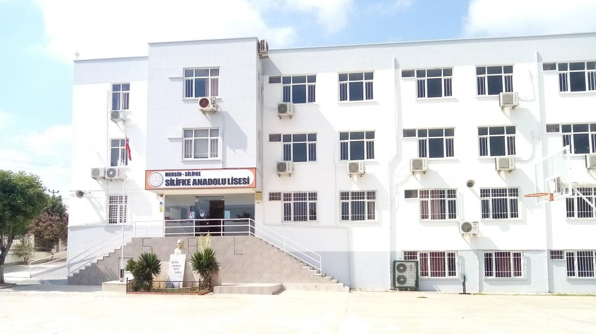
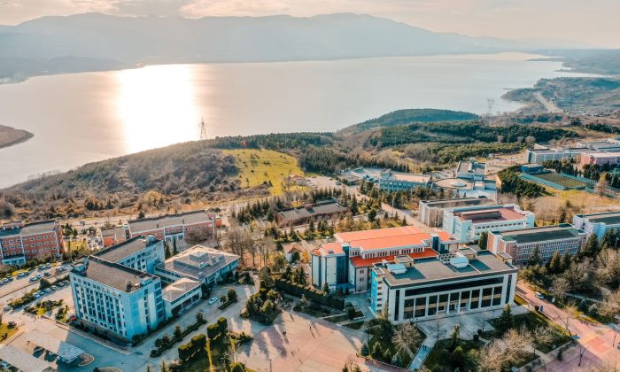

ÖZ GEÇMİŞİM HAKKINDA KISA BİLGİ
2000 yılında Mersin ilinin Silifke ilçesinde doğdum.
7 yaşında Gazipaşa İlköğretim Okulu'nda eğitim hayatıma başladım.
6.sınıfa kadar aynı okulda devam ettim. 8.sınıfta TEOG isimli sınava
girerek
Silifke Anadolu Lisesi'ni kazandım.
İlk girdiğim sınavda istediğim bir sıralama yapamadım, sonraki
senede Sakarya Üniversitesi Bilgisayar Mühendisliği bölümünü
kazandım.
Bundan sonraki hayatımda programlama ve yazılım alanında kendimi
geliştirip bu alanda başarılı olmak istiyorum.
BECERİLERİM
Şu anda kendimi Siber Güvenlil alanında geliştirmeye çalışıyorum.
Şimdiye kadar öğrenimine başladığım diller : C# , C++ , Java , C ,
Python
Web alanında : HTML5, CSS
İLGİ ALANLARIM
Voleybol
Basketbol
Bilgisayar oyunları
Kitap okumak
YABANCI DİLLER
İngilizce
Almanca
EĞİTİM BİLGİLERİM

OKUDUĞUM İLKOKUL
SİLİFKE ANADOLU LİSESİ
SAKARYA ÜNİVERSİTESİ